Code
library(tidyverse)
library(marginaleffects)
library(ggforce)
library(patchwork)
library(ggtext)
library(ggridges)library(tidyverse)
library(marginaleffects)
library(ggforce)
library(patchwork)
library(ggtext)
library(ggridges)Custom functions
me_fold_calculator <- function(me_predictions,
fold_var_name,
fold_var_group_denom,
split_var_name = NULL,
rev = FALSE){
me_predictions_df <- as.data.frame(me_predictions)
# split dataframe into list
if(is.null(split_var_name)) {
df_list <- list(me_predictions_df)
}
else{
df_list <- split(me_predictions_df, me_predictions_df[,split_var_name])
}
# calculate fold change and CIs for each entry
for (i in seq_along(df_list)) {
if(!is.null(split_var_name)){
print(names(df_list[i]))
}
df <- df_list[[i]]
fold_var_position <- which(df[, fold_var_name] == fold_var_group_denom)
df_conf <- data.frame(
comparison = paste0(df[, fold_var_name], " - ", rep(fold_var_group_denom, length(df[, fold_var_name]))),
fold = sapply(df[,"estimate"], function(x) x / df[fold_var_position ,"estimate"]),
conf.low = sapply(df[,"conf.high"], function(x) x / df[fold_var_position,"estimate"]),
conf.high = sapply(df[,"conf.low"], function(x) x / df[fold_var_position,"estimate"])
) |>
filter(comparison != paste0(fold_var_group_denom, " - ", fold_var_group_denom))
# reverse direction of fold change for foldchange reductions
if(rev) {
df_conf <- df_conf |>
mutate(across(2:4, function(x) -1*(1/x)))
}
print(df_conf)
}
}fig1c_data <- read_csv("data/fig1/fig1c.csv") |>
mutate(peak = factor(peak,
levels = c("Exon 49-50", "Exon 49-50a-50", "Exon 49-50b")),
drug = factor(drug,
labels = c("Branaplam", "Risdiplam")))
(fig1c_g <- fig1c_data %>%
ggplot(aes(x = as.factor(treatment), y = average_prop, fill = fct_rev(peak))) +
geom_col() +
facet_grid(cols = vars(drug), scales = "free_x", space = "free_x") +
# scale_fill_viridis_d(begin = 0.97, end = 0.3,option = "viridis") +
scale_fill_brewer(palette = "Pastel2") +
labs(y = "Band proportion", x = "Concentration (nM)", fill = "Splice product") +
theme_minimal()+
theme(axis.text.x = element_text(angle = 45, vjust = 1, hjust=1),
legend.position = "none") )
fig1d_data <- read_csv("data/fig1/fig1d.csv") |>
mutate(upstream_ss = factor(upstream_ss,
levels = c("G","C","A","T")),
treatment = ifelse(str_detect(treatment, "Bran"), "100 nM\nBranaplam", treatment))
(fig1d_g <- fig1d_data |>
ggplot(aes(x = upstream_ss, y = average_prop, fill = fct_rev(peak_name))) +
geom_col() +
facet_wrap(vars(fct_rev(treatment))) +
scale_fill_manual(values = c("#F4CAE4",
RColorBrewer::brewer.pal(n = 3, "Pastel2"))) +
theme_minimal() +
labs(y = "Band proportion",
x = "Minigene exon 49\nfinal nucleotide",
fill = "Splice product"))fig1_g <- fig1c_g + fig1d_g +
plot_layout(widths = c(0.6,0.4)) +
plot_annotation(tag_levels = list(c("c", "d")))
ggsave("outputs/fig1.pdf",
fig1_g,
width = 7.5,
height = 2.5)fig2a_data <- read_csv("data/fig2/fig2a_gnomad.csv")
(fig2a_g <- fig2a_data |>
ggplot(aes(position, allele_frequency)) +
geom_vline(xintercept = c(3215349, 3215463),
lty = 3,
alpha = 0.5) +
geom_vline(xintercept = c(3214291, 3214436, 3215685, 3215862),
alpha = 0.5) +
geom_point(aes(colour = have_cell_lines),
alpha = 0.5) +
ggrepel::geom_label_repel(
data = fig2a_data[which(fig2a_data$have_cell_lines == TRUE),] |>
distinct(position, allele_frequency, rs_i_ds),
aes(label = rs_i_ds),
size = 2,
fill = alpha(c("white"),0.5)) +
scale_y_log10(minor_breaks = NULL) +
scale_x_continuous(breaks = c(3214000, 3214500, 3215000, 3215500),
minor_breaks = NULL) +
annotation_logticks(outside = FALSE, sides = "l") +
theme_minimal() +
labs(colour = "Variant\nrepresented\nin cell lines\ntested", y = "MAF", x = "GRCh37 chr4 position",
title = "HTT intron 49") +
theme(legend.position = "none",
plot.title = element_text(hjust = 0.5, size = 10,
margin = margin(),
vjust = -5))
)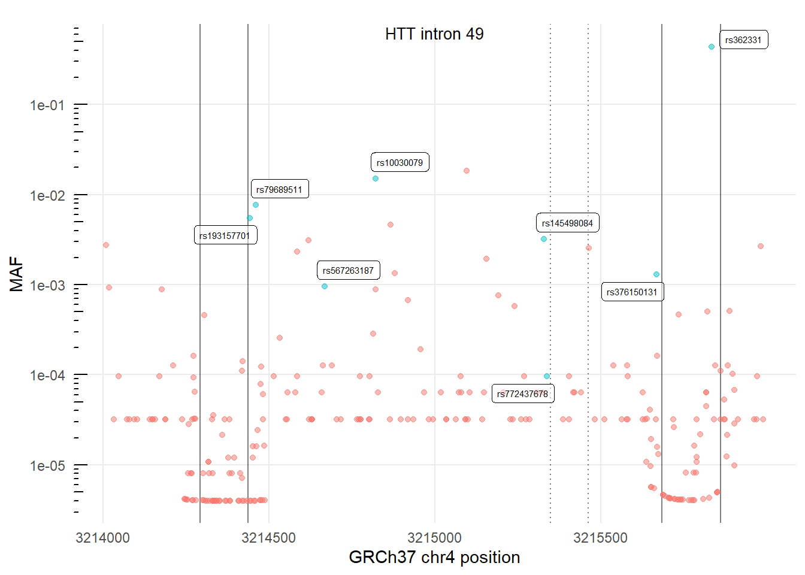
fig2b_data <- read_csv("data/fig2/fig2b_cell_lines.csv")
fig2b_rs362331 <- fig2b_data |>
filter(rs362331_status == "0/1",
!rs_i_ds %in% c("rs145498084", "rs772437678")) |>
mutate(rs_i_ds = "rs362331",
position = 3215735)
fig2b_plot_data <- fig2b_data |>
bind_rows(fig2b_rs362331) |>
mutate(rs_i_ds = fct_reorder(rs_i_ds, position),
rs_i_ds = fct_relevel(rs_i_ds,
"Reference",
after = length(unique(rs_i_ds))))
cell_line_total <- fig2b_plot_data |>
group_by(treatment, rs_i_ds) |>
summarise(n = n(),
cell_lines = n_distinct(cell_line_unique_number)) |>
ungroup() |>
complete(treatment, rs_i_ds, fill = list(n = 0, cell_lines = 0))
(fig2b_g <- fig2b_plot_data |>
ggplot(aes(rs_i_ds, can_peak_prop)) +
geom_boxplot(outlier.shape = NA) +
geom_jitter(width = 0.23,alpha = 0.5) +
geom_text(data = cell_line_total,
aes(rs_i_ds, 1.21,
label = paste0(cell_lines, "\n",n)),
size = 2) +
geom_text(data = data.frame(treatment = unique(fig2b_data$treatment),
label = rep("N= \nn=",3)),
aes(0.75, 1.21, label = label),
size = 2) +
geom_blank(aes(y = 1.3)) +
ggforce::facet_col(vars(fct_rev(treatment))) +
scale_y_continuous(breaks = c(0,0.5,1),
minor_breaks = NULL) +
labs(y = "Canonical exon 49-50 band proportion", x = "Variant",
colour = "Treatment") +
theme_bw() +
theme(strip.background =element_rect(fill="white"),
axis.text.x = element_text(angle = 45, vjust = 1, hjust=1),
axis.title.x = element_blank())
)fig_2b_lm_bran <- fig2b_data %>%
mutate(rs_i_ds = ifelse(is.na(rs_i_ds), "ref", rs_i_ds)) %>%
filter(str_detect(treatment, "Branaplam")) %>%
lme4::lmer(can_peak_prop ~ rs_i_ds + rs362331_status + (1 | experiment), data = .)
avg_comparisons(fig_2b_lm_bran) |>
knitr::kable()| type | term | contrast | estimate | std.error | statistic | p.value | conf.low | conf.high |
|---|---|---|---|---|---|---|---|---|
| response | rs_i_ds | rs10030079 - Reference | -0.0503734 | 0.0617139 | -0.8162408 | 0.4143624 | -0.1713305 | 0.0705837 |
| response | rs_i_ds | rs145498084 - Reference | 0.1879343 | 0.0359779 | 5.2236012 | 0.0000002 | 0.1174189 | 0.2584497 |
| response | rs_i_ds | rs193157701 - Reference | -0.0599691 | 0.0486266 | -1.2332586 | 0.2174793 | -0.1552755 | 0.0353372 |
| response | rs_i_ds | rs376150131 - Reference | -0.0436053 | 0.0486266 | -0.8967379 | 0.3698588 | -0.1389116 | 0.0517010 |
| response | rs_i_ds | rs567263187 - Reference | -0.0222312 | 0.0617139 | -0.3602300 | 0.7186752 | -0.1431883 | 0.0987259 |
| response | rs_i_ds | rs772437678 - Reference | 0.4026766 | 0.0500399 | 8.0471094 | 0.0000000 | 0.3046002 | 0.5007530 |
| response | rs_i_ds | rs79689511 - Reference | 0.0146977 | 0.0498328 | 0.2949398 | 0.7680399 | -0.0829729 | 0.1123682 |
| response | rs362331_status | 0/1 - 0/0 | -0.0469813 | 0.0339890 | -1.3822489 | 0.1668953 | -0.1135985 | 0.0196360 |
| response | rs362331_status | 1/1 - 0/0 | -0.0247794 | 0.0588707 | -0.4209121 | 0.6738193 | -0.1401638 | 0.0906051 |
fig_2b_lm_ris <- fig2b_data %>%
mutate(rs_i_ds = ifelse(is.na(rs_i_ds), "ref", rs_i_ds)) %>%
filter(str_detect(treatment, "Risdiplam")) %>%
lm(can_peak_prop ~ rs_i_ds, data = .)
summary(fig_2b_lm_ris)
Call:
lm(formula = can_peak_prop ~ rs_i_ds, data = .)
Residuals:
Min 1Q Median 3Q Max
-0.034246 -0.012326 0.002733 0.012326 0.028780
Coefficients:
Estimate Std. Error t value Pr(>|t|)
(Intercept) 0.04588 0.01616 2.840 0.0296 *
rs_i_dsrs145498084 0.21461 0.02285 9.392 8.27e-05 ***
rs_i_dsrs376150131 0.04920 0.01979 2.486 0.0474 *
rs_i_dsrs772437678 0.50069 0.02285 21.913 5.90e-07 ***
---
Signif. codes: 0 '***' 0.001 '**' 0.01 '*' 0.05 '.' 0.1 ' ' 1
Residual standard error: 0.02285 on 6 degrees of freedom
Multiple R-squared: 0.9908, Adjusted R-squared: 0.9862
F-statistic: 216 on 3 and 6 DF, p-value: 1.683e-06fig2b_data %>%
mutate(rs_i_ds = ifelse(is.na(rs_i_ds), "ref", rs_i_ds)) %>%
filter(str_detect(treatment, "Branaplam")) %>%
lme4::lmer(ratio_50b_50a ~ rs_i_ds + rs362331_status + (1 | experiment), data = .) |>
avg_comparisons() |>
knitr::kable()| type | term | contrast | estimate | std.error | statistic | p.value | conf.low | conf.high |
|---|---|---|---|---|---|---|---|---|
| response | rs_i_ds | rs10030079 - Reference | -5.6036381 | 4.984216 | -1.1242767 | 0.2608957 | -15.372523 | 4.165247 |
| response | rs_i_ds | rs145498084 - Reference | -1.1121593 | 2.884758 | -0.3855295 | 0.6998451 | -6.766181 | 4.541862 |
| response | rs_i_ds | rs193157701 - Reference | -5.3731137 | 3.847428 | -1.3965468 | 0.1625499 | -12.913935 | 2.167707 |
| response | rs_i_ds | rs376150131 - Reference | -3.0749691 | 3.847428 | -0.7992271 | 0.4241587 | -10.615790 | 4.465852 |
| response | rs_i_ds | rs567263187 - Reference | -5.5959379 | 4.984216 | -1.1227317 | 0.2615515 | -15.364823 | 4.172947 |
| response | rs_i_ds | rs772437678 - Reference | -5.0815781 | 4.140880 | -1.2271736 | 0.2197573 | -13.197553 | 3.034397 |
| response | rs_i_ds | rs79689511 - Reference | 0.1205339 | 4.102601 | 0.0293799 | 0.9765616 | -7.920415 | 8.161483 |
| response | rs362331_status | 0/1 - 0/0 | 2.2485588 | 2.834037 | 0.7934119 | 0.4275379 | -3.306052 | 7.803170 |
| response | rs362331_status | 1/1 - 0/0 | 1.5505783 | 4.908696 | 0.3158839 | 0.7520906 | -8.070290 | 11.171446 |
fig2c_data <- read_csv("data/fig2/fig2c_ddPCR_data.csv")
fig2c_numbers <- fig2c_data |>
group_by(treatment, rsid) |>
summarise(n = n(),
N = length(unique(cell_line)))
(fig2c_g <- fig2c_data |>
ggplot(aes(rsid, rel_dmso)) +
geom_boxplot(outlier.shape = NA) +
ggforce::geom_sina(maxwidth = 0.75,
position = position_dodge(width = 0.75),
alpha = 0.5) +
geom_text(data = fig2c_numbers,
aes(x = rsid, y = 4, label = paste0(N,"\n",n)),
size = 2) +
geom_text(data = data.frame(treatment = unique(fig2c_data$treatment),
label = rep("N= \nn=",2)),
aes(x = 0.8, y = 4, label = label),
size = 2) +
facet_wrap(vars(fct_rev(treatment))) +
scale_color_brewer(palette = "Set2") +
scale_y_log10(limits = c(NA,5),
breaks = c(0.1,1)) +
annotation_logticks(sides = "l", outside = TRUE) +
coord_cartesian(clip = "off") + # Ticks outside plot
labs(y = "Log10 <i>HTT</i> ex49-ex50<br>expression relative to DMSO") +
theme_bw() +
theme(legend.position="none",
axis.title.y = ggtext::element_markdown(),
axis.text.x = element_text(angle = 45, vjust = 1, hjust = 1),
axis.text.y = element_text(margin = margin(0,10,0,0)),
axis.title.x = element_blank(),
strip.background =element_rect(fill="white"),
panel.grid.major.x = element_line(),
panel.grid.major.y = element_line()
)
)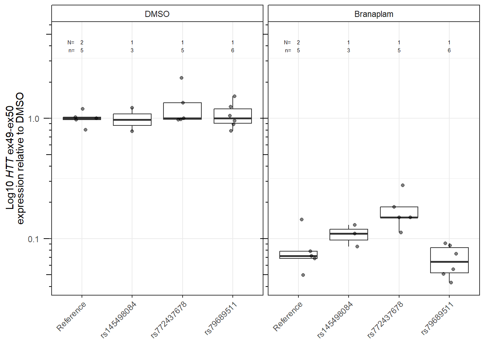
fig2 <- ((fig2a_g / fig2c_g) | fig2b_g )+ plot_annotation(tag_levels = list(c("a","c","b")))
ggsave("outputs/fig2.pdf",
fig2,
width = 7.5,
height = 5)fig3c_data <- read_csv("data/fig3/fig3c_data_edu.csv")
(
fig3c_g <- fig3c_data |>
ggplot(aes(as.factor(days_conf), positive_cell_count / total_cell_count)) +
geom_boxplot(outlier.shape = NA) +
geom_jitter(alpha = 0.1,
size = 0.5) +
theme_minimal() +
labs(y = "Edu positive / total nuclei",
x = "Days confluent")
)
fig3d_data <- read_csv("data/fig3/fig3d_data_traces.csv") |>
mutate(
facet_label = case_when(days == 0 ~ "Day 0",
dox == "Non-induced" ~ "Day 28 Non-induced",
dox == "Induced" ~ "Day 28 Induced"),
facet_label = factor(facet_label,
levels = c(unique(facet_label)[1],
unique(facet_label)[3],
unique(facet_label)[2]))
) |>
filter(strain == 23)
(fig3d_g <- fig3d_data |>
ggplot(aes(repeats, rel_signal, colour = dox)) +
geom_line() +
geom_vline(aes(xintercept = modal_repeat),
lty = 3) +
facet_wrap(vars(facet_label), ncol = 1) +
labs(x = "CAG repeat",
y = "",
fill = "Day") +
theme_minimal() +
theme(axis.text.y = element_blank(),
panel.grid.major.y = element_blank(),
panel.grid.minor.y = element_blank(),
legend.position = "none")
)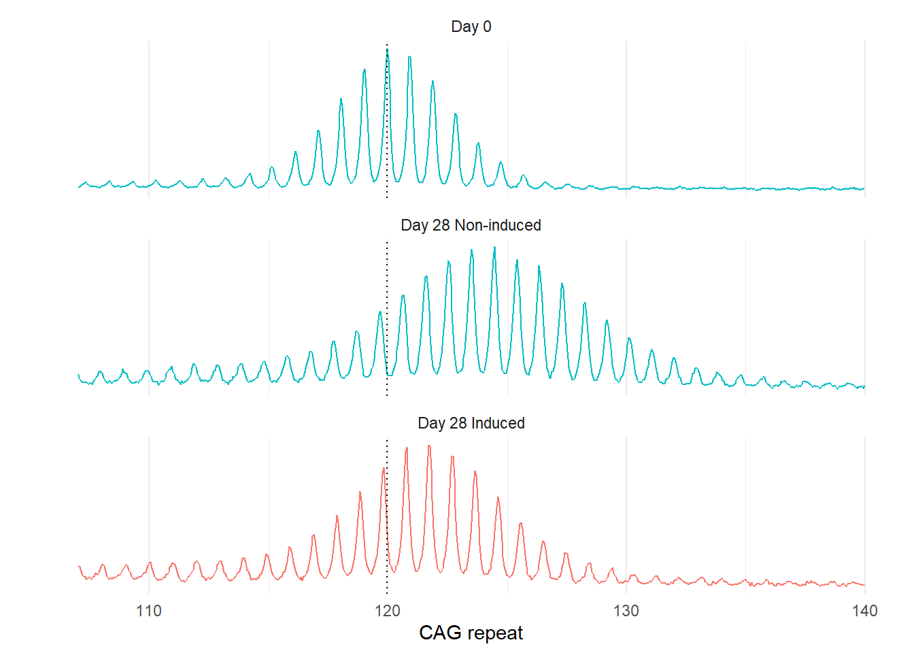
fig3e_data <- read_csv("data/fig3/fig3e_data_traces.csv") |>
mutate(
facet_label = case_when(division == "D0" ~ "Day 0",
division == "Non-dividing" ~ "Day 48 Non-dividing",
division == "Dividing" ~ "Day 48 Dividing"),
facet_label = factor(facet_label,
levels = c(unique(facet_label)[1],
unique(facet_label)[3],
unique(facet_label)[2]))
)
(fig3e_g <- fig3e_data |>
ggplot(aes(repeats, rel_signal, colour = dox)) +
geom_line() +
geom_vline(aes(xintercept = modal_repeat),
lty = 3) +
facet_wrap(vars(facet_label), ncol = 1) +
labs(x = "CAG repeat",
y = "",
fill = "Day") +
theme_minimal() +
theme(axis.text.y = element_blank(),
panel.grid.major.y = element_blank(),
panel.grid.minor.y = element_blank(),
legend.position = "none")
)fig3f_data <- read_csv("data/fig3/fig3f_data_division_gain.csv") |>
mutate(day = as.factor(day))
fig3f_numbers <- fig3f_data |>
count(day, division, dox)
(
fig3f_g <- fig3f_data |>
ggplot(aes(day, average_repeat_gain)) +
geom_boxplot(aes(colour = dox),
outlier.shape = NA) +
ggforce::geom_sina(aes(colour = dox),
alpha = 0.5) +
geom_text(data = fig3f_numbers,
aes(x = day, y = 18.5, label = n, colour = dox),
size = 2.5,
position = position_dodge(width = 0.75)) +
geom_text(data = data.frame(label = "n=", division = "Non-dividing"),
aes(x = c(0.8), y = 18.5, label = label),
size = 2.5) +
facet_wrap(vars(fct_rev(division))) +
theme_minimal() +
labs(y = "Average repeat gain",
x = "Day",
colour = "")
)
fig3f_mod <- fig3f_data |>
mutate(day = as.numeric(as.character(day))) |>
lm(average_repeat_gain ~ 0 + day:division + day:dox , data = _)
fig3f_mod |>
avg_comparisons()
Term Contrast Estimate Std. Error z Pr(>|z|) 2.5 %
day +1 0.1586 0.004138 38.33 < 2.22e-16 0.1505
division Non-dividing - Dividing -2.7562 0.260474 -10.58 < 2.22e-16 -3.2667
dox Non-induced - Induced 3.4309 0.260474 13.17 < 2.22e-16 2.9204
97.5 %
0.1667
-2.2457
3.9415
Prediction type: response
Columns: type, term, contrast, estimate, std.error, statistic, p.value, conf.low, conf.high What is the gain total?
fig3f_mod |>
predictions(newdata = datagrid(
day = 48,
division = unique(fig3f_data$division),
dox = unique(fig3f_data$dox)
)) |>
select(division, dox, estimate, conf.low, conf.high) |>
as.data.frame() division dox estimate conf.low conf.high
1 Dividing Non-induced 12.014476 11.352993 12.675958
2 Dividing Induced 6.819065 6.157582 7.480547
3 Non-dividing Non-induced 7.840794 7.147795 8.533793
4 Non-dividing Induced 2.645383 1.983901 3.306865effect of division?
fig3f_mod |>
avg_predictions(by = "division") |>
me_fold_calculator(fold_var_name = "division",
fold_var_group_denom = "Non-dividing") comparison fold conf.low conf.high
1 Dividing - Non-dividing 1.886224 1.993747 1.778701fig3g_data <- read_csv("data/fig3/fig3g_data_flow.csv")
(
fig3g_g <- fig3g_data |>
ggplot(aes(x = GFP.A + 0.01,
y = name,
fill = fct_rev(dox))
) +
geom_density_ridges() +
scale_x_log10(labels = scales::label_log(),
limits = c(3*10^0, 3*10^4)) +
labs(x = "GFP signal",
y = "") +
theme_minimal() +
theme(legend.position = "none")
)
fig3g_mod <- lm(GFP.A~name, data = fig3g_data)
avg_predictions(fig3g_mod,
by = "name") |>
me_fold_calculator("name", "RPE1\nnon-induced") comparison fold conf.low
1 RPE1\ninduced - RPE1\nnon-induced 0.9988045 3.742638
2 RPE1-AAVS1-CAG115\nnon-induced - RPE1\nnon-induced 30.9055352 33.224815
3 RPE1-AAVS1-CAG115\ninduced - RPE1\nnon-induced 180.9119547 183.270755
conf.high
1 -1.745029
2 28.586255
3 178.553154avg_predictions(fig3g_mod,
by = "name") |>
me_fold_calculator("name", "RPE1-AAVS1-CAG115\nnon-induced") comparison fold
1 RPE1\nnon-induced - RPE1-AAVS1-CAG115\nnon-induced 0.03235666
2 RPE1\ninduced - RPE1-AAVS1-CAG115\nnon-induced 0.03231798
3 RPE1-AAVS1-CAG115\ninduced - RPE1-AAVS1-CAG115\nnon-induced 5.85370723
conf.low conf.high
1 0.1351582 -0.07044484
2 0.1210993 -0.05646333
3 5.9300301 5.77738431fig3h_data <- read_csv("data/fig3/fig3h_data_expression.csv") |>
mutate(assay = ifelse(assay == "PPP1R12C exon 1-2 (from transgene chromosome)",
"PPP1R12C ex. 1-2 (from transgene chr.)", assay),
assay = fct_relevel(assay, "EGFP", after = 2),
assay = gsub("PPP1R12C","<i>PPP1R12C</i>",assay),
assay = gsub("EGFP","<i>EGFP</i>",assay),
assay = gsub("PuroR","<i>PuroR</i>",assay))
(
fig3h_g <- fig3h_data |>
ggplot(aes( rel_expression, dox_status, colour = dox_status)) +
stat_summary(fun = "median", size = 0.5, geom = "crossbar", position = position_dodge()) +
ggforce::geom_sina() +
facet_wrap(vars(assay), ncol = 1) +
scale_x_log10(labels = scales::label_log()) +
annotation_logticks(sides = "b") +
labs(y = "",
x = "Relative expression") +
theme_bw() +
theme(legend.position = "none",
strip.background =element_rect(fill="white"),
strip.text = ggtext::element_markdown(size = 8))
)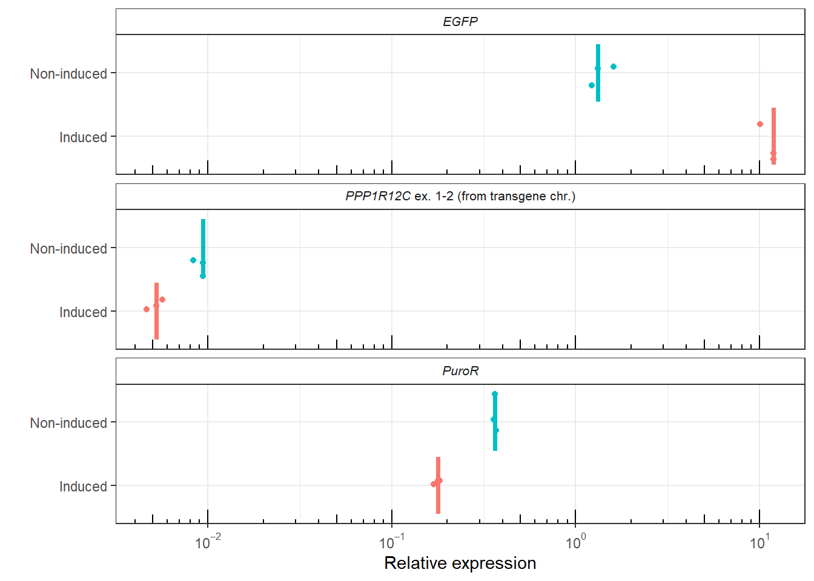
fig3h_assays <- unique(fig3h_data$assay)
for (i in seq_along(fig3h_assays)) {
print(paste0(fig3h_assays[i], "----------------------------------"))
fig3h_mod <- fig3h_data |>
filter(assay == fig3h_assays[i]) |>
mutate(dox_status = fct_rev(dox_status)) |>
lm(rel_expression ~ dox_status, data = _)
fig3h_mod |>
avg_comparisons() |>
print()
fig3h_mod |>
avg_predictions(by = "dox_status") |>
me_fold_calculator(fold_var_name = "dox_status",
fold_var_group_denom = "Non-induced",
rev = ifelse(fig3h_assays[i] == "<i>EGFP</i>", FALSE, TRUE))|>
print()
}[1] "<i>PPP1R12C</i> ex. 1-2 (from transgene chr.)----------------------------------"
Term Contrast Estimate Std. Error z Pr(>|z|)
dox_status Induced - Non-induced -0.003865 0.0004662 -8.291 < 2.22e-16
2.5 % 97.5 %
-0.004779 -0.002951
Prediction type: response
Columns: type, term, contrast, estimate, std.error, statistic, p.value, conf.low, conf.high
comparison fold conf.low conf.high
1 Induced - Non-induced -1.746162 -1.552521 -1.994991
NULL
[1] "<i>EGFP</i>----------------------------------"
Term Contrast Estimate Std. Error z Pr(>|z|) 2.5 %
dox_status Induced - Non-induced 9.912 0.6161 16.09 < 2.22e-16 8.705
97.5 %
11.12
Prediction type: response
Columns: type, term, contrast, estimate, std.error, statistic, p.value, conf.low, conf.high
comparison fold conf.low conf.high
1 Induced - Non-induced 8.175353 8.793424 7.557282
NULL
[1] "<i>PuroR</i>----------------------------------"
Term Contrast Estimate Std. Error z Pr(>|z|) 2.5 %
dox_status Induced - Non-induced -0.1865 0.005224 -35.7 < 2.22e-16 -0.1967
97.5 %
-0.1763
Prediction type: response
Columns: type, term, contrast, estimate, std.error, statistic, p.value, conf.low, conf.high
comparison fold conf.low conf.high
1 Induced - Non-induced -2.056269 -1.975272 -2.144194
NULLfig3h_mod <- fig3h_data |>
mutate(dox_status = fct_rev(dox_status)) |>
lm(rel_expression ~ assay * dox_status, data = _)
fig3h_mod |>
predictions(by = c("assay", "dox_status")) |>
filter(dox_status == "Non-induced",
assay %in% c("<i>EGFP</i>", "<i>PuroR</i>")) |>
me_fold_calculator(fold_var_name = "assay",
fold_var_group_denom = "<i>PuroR</i>") comparison fold conf.low conf.high
1 <i>EGFP</i> - <i>PuroR</i> 3.80505 5.162908 2.447193fig3_top <- plot_spacer() + fig3c_g + fig3d_g +
plot_annotation(tag_levels = list(c("c","d")))
fig3_middle <- fig3e_g + fig3f_g +
plot_annotation(tag_levels = list(c("e","f")))
fig3_bottom <- fig3g_g + fig3h_g +
plot_annotation(tag_levels = list(c("g", "h")))
ggsave("outputs/fig3_top.pdf",
fig3_top,
height = 2.5,
width = 7.5)
ggsave("outputs/fig3_middle.pdf",
fig3_middle,
height = 2.5,
width = 7.5)
ggsave("outputs/fig3_bottom.pdf",
fig3_bottom,
height = 2.5*1.5,
width = 7.5)fig4a_data <- read_csv("data/fig4/fig4c_traces_data.csv") |>
mutate(ko = gsub("FAN1","<i>FAN1</i>",ko),
ko = gsub("MSH3","<i>MSH3</i>",ko),
ko = gsub("PMS1","<i>PMS1</i>",ko),
ko = fct_relevel(ko,
"Empty vector"))
(fig4a_g <- fig4a_data |>
ggplot(aes(repeats, rel_signal, colour = ko)) +
geom_line(linewidth = 0.05) +
geom_vline(aes(xintercept = modal_repeat ),
lty = 3,
linewidth = 0.75,
colour = "black") +
facet_grid(culture_day ~ ko) +
scale_colour_viridis_d(option = "inferno", end = 0.8 ) +
scale_y_continuous(minor_breaks = NULL) +
scale_x_continuous(minor_breaks = NULL) +
theme_minimal() +
theme(legend.position = "none",
axis.text.y = element_blank(),
axis.text.x = element_text(size = 5),
strip.text = ggtext::element_markdown(size = 8.5)) +
labs(x = "CAG repeat length", y = "Relative signal intensity", title = "Pooled edited populations"))fig4b_data <- read_csv("data/fig4/fig4d_ko_repeat_gain.csv") |>
mutate(ko = gsub("FAN1","<i>FAN1</i>",ko),
ko = gsub("MSH3","<i>MSH3</i>",ko),
ko = gsub("PMS1","<i>PMS1</i>",ko),
ko = fct_relevel(ko,
"Empty vector"))
fig4b_numbers <- fig4b_data |>
group_by(ko, culture_day) |>
summarise(n = n())
(fig4b_g <- fig4b_data |>
ggplot(aes(as.factor(culture_day), average_repeat_gain)) +
geom_boxplot(aes(colour = ko),
outlier.shape = NA,
size = 0.25) +
ggforce::geom_sina(aes(colour = ko),
alpha = 0.7,
shape = 21) +
geom_text(data = fig4b_numbers,
aes(y = 20, label = paste0(n)),
size = 2.5) +
geom_text(data = data.frame(ko = unique(fig4b_data$ko)[4],
label = "n="),
aes(x = 0.7, y = 20, label = label),
size = 2.5) +
facet_wrap(vars(ko), nrow = 1) +
scale_colour_viridis_d(option = "inferno", end = 0.8 ) +
labs(x = "Day", colour = "group", y = "Average repeat gain", title = "Pooled edited populations") +
theme_minimal() +
theme(legend.position = "none",
strip.text = ggtext::element_markdown(size = 8.4))
)fig4b_lm <- fig4b_data %>%
lm(average_repeat_gain ~ 0 + culture_day:as.factor(ko), data = .)slopes(fig4b_lm,
variables = "culture_day",
by = "ko") |>
mutate(across(c("estimate", "conf.low", "conf.high"),
function(x) x * 7)) |>
as.data.frame() |>
knitr::kable()| type | term | contrast | estimate | std.error | statistic | p.value | conf.low | conf.high | ko | predicted | predicted_hi | predicted_lo |
|---|---|---|---|---|---|---|---|---|---|---|---|---|
| response | culture_day | mean(dY/dX) | 2.5189107 | 0.0086595 | 41.5550403 | 0.0000000 | 2.4001050 | 2.6377163 | FAN1-KO | 15.1134641 | 15.1149754 | 15.1134641 |
| response | culture_day | mean(dY/dX) | -0.0164595 | 0.0079050 | -0.2974522 | 0.7661213 | -0.1249137 | 0.0919948 | PMS1-KO | -0.0987568 | -0.0987666 | -0.0987568 |
| response | culture_day | mean(dY/dX) | -0.1779952 | 0.0088380 | -2.8770997 | 0.0040135 | -0.2992508 | -0.0567397 | MSH3-KO | -1.0679714 | -1.0680782 | -1.0679714 |
| response | culture_day | mean(dY/dX) | 1.3432987 | 0.0092310 | 20.7885822 | 0.0000000 | 1.2166514 | 1.4699460 | Empty vector | 8.0597922 | 8.0605982 | 8.0597922 |
slopes(fig4b_lm,
variables = "culture_day",
by = "ko",
hypothesis = "b1-b4 = 0") |>
mutate(across(c("estimate", "conf.low", "conf.high"),
function(x) x * 7)) |>
knitr::kable()| type | term | estimate | std.error | statistic | p.value | conf.low | conf.high |
|---|---|---|---|---|---|---|---|
| response | b1-b4=0 | 1.175612 | 0.0126569 | 13.26897 | 0 | 1.001962 | 1.349262 |
slopes(fig4b_lm,
variables = "culture_day",
by = "ko",
hypothesis = "b2-b4 = 0") |>
mutate(across(c("estimate", "conf.low", "conf.high"),
function(x) x * 7)) |>
knitr::kable()| type | term | estimate | std.error | statistic | p.value | conf.low | conf.high |
|---|---|---|---|---|---|---|---|
| response | b2-b4=0 | -1.359758 | 0.0121532 | -15.98354 | 0 | -1.526497 | -1.193019 |
slopes(fig4b_lm,
variables = "culture_day",
by = "ko",
hypothesis = "b2-b4 = 0") |>
mutate(across(c("estimate", "conf.low", "conf.high"),
function(x) x * 7)) |>
knitr::kable()| type | term | estimate | std.error | statistic | p.value | conf.low | conf.high |
|---|---|---|---|---|---|---|---|
| response | b2-b4=0 | -1.359758 | 0.0121532 | -15.98354 | 0 | -1.526497 | -1.193019 |
fig4c_data <- read_csv("data/fig4/fig4e_data_KO_strains.csv") |>
filter(!is.na(weighted_repeat_gain)) |>
mutate(gene_geno = gsub("MSH3","<i>MSH3</i>",gene_geno),
gene_geno = gsub("PMS1","<i>PMS1</i>",gene_geno),
gene_geno = fct_relevel(gene_geno,
"+/+"))
fig4c_numbers <- fig4c_data |>
group_by(day,gene_geno) |>
summarise(N = length(unique(cell_strain)),
n = n())
msh3_col <- scales::viridis_pal(option = "inferno", end = 0.8 )(4)[3]
pms1_col <- scales::viridis_pal(option = "inferno", end = 0.8 )(4)[4]
(fig4c_g <- fig4c_data |>
ggplot(aes(as.factor(day),weighted_repeat_gain, colour = gene_geno)) +
geom_boxplot(outlier.shape = NA,
size = 0.25) +
ggforce::geom_sina(shape = 21,
alpha = 0.5) +
geom_text(data = fig4c_numbers,
aes(x = as.factor(day), y = 12, label = paste0(N, "\n", n)),
colour = "black",
size = 2.5) +
geom_text(data = data.frame(gene_geno = unique(fig4c_data$gene_geno)[2],
label = "N=\nn="),
aes(x = 0.65, y = 12, label = label),
size = 2.5,
colour = "black") +
facet_wrap(vars(gene_geno), nrow = 1) +
scale_y_continuous(limits = c(NA,13)) +
scale_color_manual(values =
c(msh3_col,
msh3_col,
pms1_col,
pms1_col)
) +
labs(y = "Average repeat gain", x = "Day", title = "Clonal edited strains") +
theme_minimal() +
theme(legend.position = "none",
strip.text = ggtext::element_markdown(size = 8.4))
)fig4c_data |>
filter(day != 0) |>
lm(weighted_repeat_gain ~ day * gene_geno, data = _) |>
avg_comparisons(variables = list(gene_geno = "pairwise")) |>
knitr::kable()| type | term | contrast | estimate | std.error | statistic | p.value | conf.low | conf.high |
|---|---|---|---|---|---|---|---|---|
| response | gene_geno | MSH3-/- - +/+ | -7.9504724 | 0.3758903 | -21.151047 | 0.0000000 | -8.6872037 | -7.2137410 |
| response | gene_geno | PMS1-/- - +/+ | -7.2988085 | 0.3992594 | -18.280870 | 0.0000000 | -8.0813424 | -6.5162745 |
| response | gene_geno | PMS1+/- - +/+ | -0.2368999 | 0.4889909 | -0.484467 | 0.6280545 | -1.1953044 | 0.7215045 |
| response | gene_geno | PMS1-/- - MSH3-/- | 0.6516639 | 0.2481723 | 2.625853 | 0.0086432 | 0.1652552 | 1.1380725 |
| response | gene_geno | PMS1+/- - MSH3-/- | 7.7135724 | 0.3758903 | 20.520810 | 0.0000000 | 6.9768411 | 8.4503038 |
| response | gene_geno | PMS1+/- - PMS1-/- | 7.0619086 | 0.3992594 | 17.687522 | 0.0000000 | 6.2793746 | 7.8444425 |
fig4_top_row <- fig4a_g
fig4_bottom_row <- fig4b_g + fig4c_g + plot_layout(widths = c(0.6,0.4))
fig4 <- fig4_top_row/ fig4_bottom_row +
plot_annotation(tag_levels = "a")
ggsave("outputs/fig4.pdf",
fig4,
width = 7.5,
height = 5)plot_average_repeat_gain = function(df){
df |>
ggplot(aes(as.factor(day), average_repeat_gain)) +
geom_boxplot(aes(colour = as.factor(concentration)),
position = position_dodge2(preserve = "single"),
outlier.shape = NA) +
geom_point(aes(colour = as.factor(concentration)),
position = position_jitterdodge(),
shape = 21,
alpha = 0.5) +
labs(colour = "Concentration\n(nM)",
y = "Average repeat gain",
x = "Day") +
theme_minimal() +
scale_y_continuous(limits = c(-0.5,4.5)) +
scale_colour_viridis_d(option = "mako", end = 0.8) +
# scale_colour_brewer(palette = "Set2", na.value = "gray60") +
theme(legend.title = element_text(size = 8.5))
}fig5a_data <- read_csv("data/fig5/fig5a_data_bran_instability.csv")
(fig5a_g <- fig5a_data |>
plot_average_repeat_gain()
)fig5a_lm <- fig5a_data %>%
lm(average_repeat_gain ~ 0 + day:as.factor(concentration), data = .)slopes(fig5a_lm,
variables = "day",
by = "concentration") |>
mutate(across(c("estimate", "conf.low", "conf.high"),
function(x) x * 7)) |>
knitr::kable()| type | term | contrast | estimate | std.error | statistic | p.value | conf.low | conf.high | concentration | predicted | predicted_hi | predicted_lo |
|---|---|---|---|---|---|---|---|---|---|---|---|---|
| response | day | mean(dY/dX) | 1.0064870 | 0.0059619 | 24.11728 | 0 | 0.9246918 | 1.0882823 | 0 | 0.000000 | 0.0004026 | 0.000000 |
| response | day | mean(dY/dX) | 0.8790143 | 0.0060848 | 20.63725 | 0 | 0.7955324 | 0.9624962 | 25 | 1.758029 | 1.7583802 | 1.758029 |
| response | day | mean(dY/dX) | 0.7951018 | 0.0059619 | 19.05210 | 0 | 0.7133066 | 0.8768971 | 100 | 1.590204 | 1.5905217 | 1.590204 |
slopes(fig5a_lm,
variables = "day",
by = "concentration",
hypothesis = "b2-b1 = 0") |>
mutate(across(c("estimate", "conf.low", "conf.high"),
function(x) x * 7)) |>
knitr::kable()| type | term | estimate | std.error | statistic | p.value | conf.low | conf.high |
|---|---|---|---|---|---|---|---|
| response | b2-b1=0 | -0.1274727 | 0.0085187 | -2.137692 | 0.0325418 | -0.2443474 | -0.0105981 |
slopes(fig5a_lm,
variables = "day",
by = "concentration",
hypothesis = "b3-b1 = 0") |>
mutate(across(c("estimate", "conf.low", "conf.high"),
function(x) x * 7)) |>
knitr::kable()| type | term | estimate | std.error | statistic | p.value | conf.low | conf.high |
|---|---|---|---|---|---|---|---|
| response | b3-b1=0 | -0.2113852 | 0.0084313 | -3.581622 | 0.0003415 | -0.3270611 | -0.0957093 |
fig5b_data <- read_csv("data/fig5/fig5a_data_ris_instability.csv")
(fig5b_g <- fig5b_data |>
plot_average_repeat_gain()
)
fig5b_lm <- fig5b_data %>%
lm(average_repeat_gain ~ 0 + day:as.factor(concentration), data = .)slopes(fig5b_lm,
variables = "day",
by = "concentration") |>
mutate(across(c("estimate", "conf.low", "conf.high"),
function(x) x * 7)) |>
knitr::kable()| type | term | contrast | estimate | std.error | statistic | p.value | conf.low | conf.high | concentration | predicted | predicted_hi | predicted_lo |
|---|---|---|---|---|---|---|---|---|---|---|---|---|
| response | day | mean(dY/dX) | 0.8513872 | 0.0047499 | 25.60597 | 0 | 0.7862193 | 0.9165551 | 0 | 0.000000 | 0.0003406 | 0.000000 |
| response | day | mean(dY/dX) | 0.9725243 | 0.0047499 | 29.24924 | 0 | 0.9073563 | 1.0376922 | 100 | 1.945049 | 1.9454376 | 1.945049 |
| response | day | mean(dY/dX) | 0.4873315 | 0.0047499 | 14.65678 | 0 | 0.4221636 | 0.5524995 | 500 | 0.974663 | 0.9748580 | 0.974663 |
slopes(fig5b_lm,
variables = "day",
by = "concentration",
hypothesis = "b2-b1 = 0") |>
mutate(across(c("estimate", "conf.low", "conf.high"),
function(x) x * 7)) |>
knitr::kable()| type | term | estimate | std.error | statistic | p.value | conf.low | conf.high |
|---|---|---|---|---|---|---|---|
| response | b2-b1=0 | 0.1211371 | 0.0067174 | 2.57618 | 0.0099899 | 0.0289757 | 0.2132985 |
slopes(fig5b_lm,
variables = "day",
by = "concentration",
hypothesis = "b3-b1 = 0") |>
mutate(across(c("estimate", "conf.low", "conf.high"),
function(x) x * 7)) |>
knitr::kable()| type | term | estimate | std.error | statistic | p.value | conf.low | conf.high |
|---|---|---|---|---|---|---|---|
| response | b3-b1=0 | -0.3640557 | 0.0067174 | -7.742245 | 0 | -0.4562171 | -0.2718943 |
fig5c_data <- read_csv("data/fig5/fig5c_data.csv") |>
mutate(drug_conc = ifelse(drug_conc == "500 nM Ris", "500 nM Ris.", drug_conc),
drug_conc = fct_relevel(drug_conc, "DMSO"))
(
fig5c_g <- fig5c_data |>
ggplot(aes(drug_conc, Total_Masses)) +
geom_boxplot(outlier.shape = NA) +
ggforce::geom_sina(
shape = 21,
alpha = 0.2) +
scale_y_log10() +
annotation_logticks(sides = "l") +
theme_minimal() +
labs(y = "Log10 Cytotox stained\nobjects per field of view", x = "") +
theme(axis.text.x = element_text(angle = 45, hjust = 1, vjust =1),
axis.text.y = element_text(margin = margin(0,10,0,0)),
legend.position = "none")
)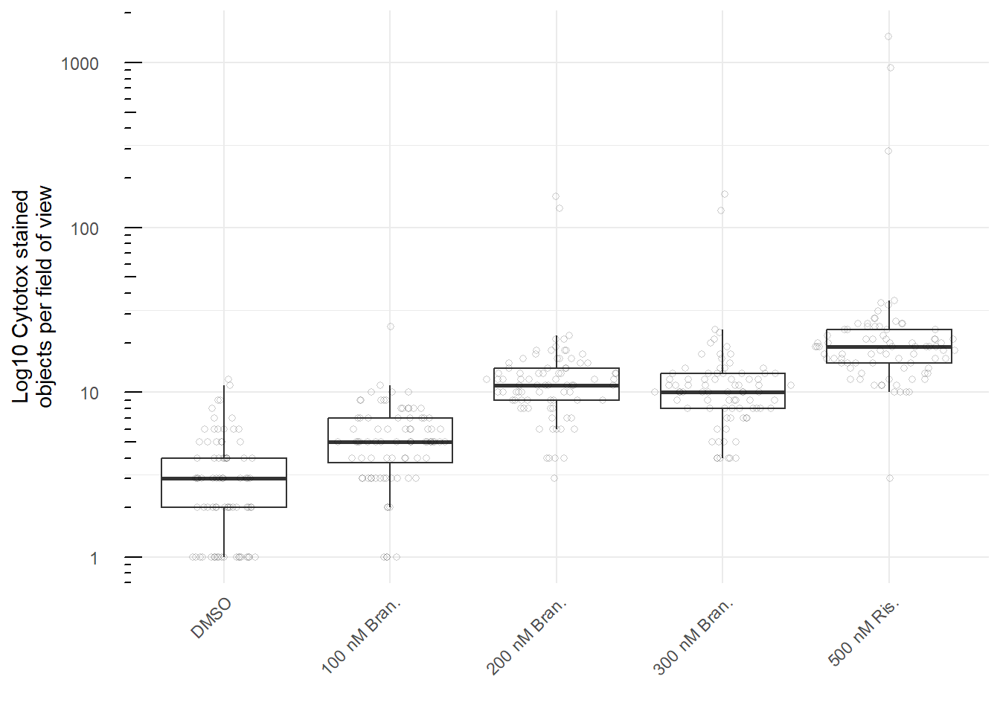
fig5c_data |>
lm(Total_Masses ~ drug_conc, data = _) |>
summary()
Call:
lm(formula = Total_Masses ~ drug_conc, data = fig5c_data)
Residuals:
Min 1Q Median 3Q Max
-47.75 -7.68 -2.48 -0.20 1387.25
Coefficients:
Estimate Std. Error t value Pr(>|t|)
(Intercept) 3.198 9.474 0.338 0.735902
drug_conc100 nM Bran. 2.284 13.398 0.170 0.864724
drug_conc200 nM Bran. 11.481 13.398 0.857 0.391972
drug_conc300 nM Bran. 10.630 13.398 0.793 0.428020
drug_conc500 nM Ris. 47.556 13.398 3.550 0.000432 ***
---
Signif. codes: 0 '***' 0.001 '**' 0.01 '*' 0.05 '.' 0.1 ' ' 1
Residual standard error: 85.26 on 400 degrees of freedom
Multiple R-squared: 0.0395, Adjusted R-squared: 0.02989
F-statistic: 4.112 on 4 and 400 DF, p-value: 0.002813fig5d_data <- read_csv("data/fig5/fig5d_data.csv") |>
mutate(drug_conc = ifelse(drug_conc == "500 nM Ris", "500 nM Ris.", drug_conc),
drug_conc = fct_relevel(drug_conc, "DMSO"))
(fig5d_g <- fig5d_data |>
ggplot(aes(drug_conc, Mean)) +
geom_boxplot(outlier.shape = NA) +
ggforce::geom_sina(
shape = 21,
alpha = 0.2) +
theme_minimal() +
labs(y = "Average autofluorescence\npixel intensity",
x = "") +
theme(axis.text.x = element_text(angle = 45, hjust = 1, vjust =1),
axis.text.y = element_text(margin = margin(0,10,0,0)),
legend.position = "none")
)fig5d_data |>
lm(Mean ~ drug_conc, data = _) |>
summary()
Call:
lm(formula = Mean ~ drug_conc, data = fig5d_data)
Residuals:
Min 1Q Median 3Q Max
-0.6882 -0.0969 -0.0394 0.0275 4.5492
Coefficients:
Estimate Std. Error t value Pr(>|t|)
(Intercept) 24.20172 0.04488 539.267 < 2e-16 ***
drug_conc100 nM Bran. 0.18683 0.06347 2.944 0.00343 **
drug_conc200 nM Bran. 0.33059 0.06347 5.209 3.05e-07 ***
drug_conc300 nM Bran. 0.33122 0.06347 5.219 2.90e-07 ***
drug_conc500 nM Ris. 1.79103 0.06347 28.219 < 2e-16 ***
---
Signif. codes: 0 '***' 0.001 '**' 0.01 '*' 0.05 '.' 0.1 ' ' 1
Residual standard error: 0.4039 on 400 degrees of freedom
Multiple R-squared: 0.7197, Adjusted R-squared: 0.7169
F-statistic: 256.7 on 4 and 400 DF, p-value: < 2.2e-16fig5_top <- fig5a_g + fig5b_g +
plot_annotation(tag_levels = "a")
ggsave("outputs/fig5_top.pdf",
fig5_top,
width = 7.5,
height = 2.5)
fig5_bottom <- fig5c_g + fig5d_g +
plot_annotation(tag_levels = list(c("c", "d")))
ggsave("outputs/fig5_bottom.pdf",
fig5_bottom,
width = 7.5,
height = 2.5)fig6b_data <- read_csv("data/fig6/fig6c_data_pms1_dose.csv")
(fig6b_g <- fig6b_data %>%
ggplot(aes(treatment, peak_prop, colour = drug)) +
geom_point(shape = 1) +
scale_x_log10() +
scale_colour_brewer(palette = "Set2") +
# stat_summary(fun = median, geom = "point") +
geom_smooth(method = 'loess') +
labs(y = "Canonical\nband proportion", x = "Concentration (nM)", colour = "Drug") +
theme_minimal()+
annotation_logticks(sides = "b", outside = TRUE) +
coord_cartesian(clip = "off") +
theme(axis.text.x = element_text(margin = margin(8))))fig6_g <- fig6b_g +
plot_annotation(tag_levels = list(c("b")))
ggsave("outputs/fig6.pdf",
fig6_g,
width = 3.75,
height = 2)fig7c_data <- read_csv("data/fig7/fig7c_data_ddPCR.csv") |>
mutate(treatment = str_replace(treatment, "nM\nBranaplam", "nM Bran."),
genotype = gsub("PMS1","<i>PMS1</i>",genotype),
genotype = gsub("delta", "Δ", genotype)) |>
filter(target == "PMS1")
fig7c_numbers <- fig7c_data |>
group_by(genotype, treatment) |>
summarise(N = length(unique(cell_line)),
n = n())
(fig7c_g <- fig7c_data |>
ggplot(aes(fct_rev(treatment), rel_dmso)) +
geom_boxplot() +
geom_point(aes(colour = cell_line),
position = position_dodge(width = 0.5),
size = 2,
alpha = 0.5) +
geom_text(data = fig7c_numbers,
aes(x = fct_rev(treatment), y = 1.5,
label = paste0(N,"\n", n)),
size = 2) +
geom_text(data = data.frame(label = rep("N=\nn="),
genotype = unique(fig7c_data$genotype)),
aes(x = 0.8, y = 1.5, label = label),
size = 2) +
scale_colour_viridis_d() +
scale_y_continuous(limits = c(0,1.6),
breaks = c(0,0.25,0.5,0.75, 1),
minor_breaks = NULL) +
facet_wrap(vars(fct_rev(genotype))) +
theme_bw() +
labs(y = "PMS1 exon 5-6 expression\nrelative to median DMSO", x = "") +
theme(strip.background =element_rect(fill="white"),
legend.position = "none",
axis.text.x = element_text(angle = 45, hjust = 1, vjust =1),
axis.text.y = element_text(margin = margin(0,10,0,0)),
strip.text = ggtext::element_markdown()
))Are PMS1 delta PE cells different to WT for non-treated?
fig7c_lm_ratio <- lm(ratio ~ genotype * treatment, data = fig7c_data)comparisons(fig7c_lm_ratio,
variables = list(genotype = rev(unique(fig7c_data$genotype))),
newdata = datagrid(treatment = c("DMSO")))
Term Contrast Estimate Std. Error z Pr(>|z|)
genotype <i>PMS1</i>\nΔ PE - WT 0.009333 0.02684 0.3477 0.72807
2.5 % 97.5 % treatment
-0.04328 0.06195 DMSO
Prediction type: response
Columns: rowid, type, term, contrast, estimate, std.error, statistic, p.value, conf.low, conf.high, predicted, predicted_hi, predicted_lo, ratio, genotype, treatment effect of treatment
fig7c_lm <- lm(rel_dmso ~ genotype * treatment, data = fig7c_data)comparisons(
fig7c_lm,
variables = list(treatment = unique(fig7c_data$treatment)),
newdata = datagrid(genotype = rev(unique(fig7c_data$genotype)))
)
Term Contrast Estimate Std. Error z Pr(>|z|) 2.5 %
treatment 200 nM Bran. - DMSO -0.6881 0.08874 -7.754 8.8895e-15 -0.8620
treatment 200 nM Bran. - DMSO -0.3818 0.08874 -4.303 1.6871e-05 -0.5557
97.5 % genotype
-0.5142 WT
-0.2079 <i>PMS1</i>\nΔ PE
Prediction type: response
Columns: rowid, type, term, contrast, estimate, std.error, statistic, p.value, conf.low, conf.high, predicted, predicted_hi, predicted_lo, rel_dmso, treatment, genotype predictions(
fig7c_lm,
variables = list(treatment = unique(fig7c_data$treatment)),
newdata = datagrid(genotype = rev(unique(fig7c_data$genotype)))
) |>
me_fold_calculator(fold_var_name = "treatment",
fold_var_group_denom = "DMSO",
split_var_name = "genotype",
rev = TRUE)[1] "<i>PMS1</i>\nΔ PE"
comparison fold conf.low conf.high
1 200 nM Bran. - DMSO -1.651929 -1.365246 -2.091011
[1] "WT"
comparison fold conf.low conf.high
1 200 nM Bran. - DMSO -3.768566 -2.521077 -7.4599is the effect in wt and PMS1 delta PE cells different?
comparisons(
fig7c_lm,
variables = list(treatment = unique(fig7c_data$treatment)),
newdata = datagrid(genotype = rev(unique(fig7c_data$genotype))),
hypothesis = "b1 = b2"
) |>
as.data.frame() |>
knitr::kable()| type | term | estimate | std.error | statistic | p.value | conf.low | conf.high |
|---|---|---|---|---|---|---|---|
| response | b1=b2 | -0.306281 | 0.1254956 | -2.440572 | 0.014664 | -0.5522478 | -0.0603142 |
fig7d_data <- read_csv("data/fig7/fig7d_data_instability1.csv") |>
mutate(treatment = str_replace(treatment, "nM\n", "nM "),
treatment = fct_relevel(treatment,
"DMSO"),
genotype = gsub("PMS1","<i>PMS1</i>",genotype),
genotype = gsub("HTT","<i>HTT</i>",genotype),
genotype = gsub("delta", "Δ", genotype),
genotype = gsub("\n", " ", genotype),
genotype = fct_relevel(genotype,
"WT"))
fig7d_numbers <- fig7d_data |>
group_by(genotype, treatment) |>
summarise(N = length(unique(cell_line)),
n = n())
(fig7d_g <- fig7d_data |>
ggplot(aes(genotype, normalised_gain)) +
geom_hline(yintercept = 1,
lty = 3) +
geom_boxplot(outlier.shape = NA) +
ggforce::geom_sina(aes(colour = as.factor(cell_line)),
size = 1.5,
alpha = 0.5) +
geom_text(data = fig7d_numbers,
aes(x = genotype, y = 1.75,
label = paste0(N,"\n", n)),
size = 2) +
geom_text(data = data.frame(label = rep("N=\nn="),
genotype = unique(fig7d_data$genotype)),
aes(x = 0.73, y = 1.75, label = label),
size = 2) +
scale_colour_viridis_d() +
scale_y_continuous(limits = c(0, 1.86)) +
facet_wrap(vars(treatment), nrow = 1, scales = "free_x") +
labs(x = "", y = "Repeat gain\nrelative to DMSO", colour = "Genotype clone") +
theme_bw() +
theme(strip.background =element_rect(fill="white"),
legend.position = "none",
axis.text.y = element_text(margin = margin(0,10,0,0)),
panel.grid.minor.y = element_blank(),
axis.text.x = ggtext::element_markdown(angle = 45, hjust = 1, vjust =1),
strip.text = element_text(size = 7.4)
))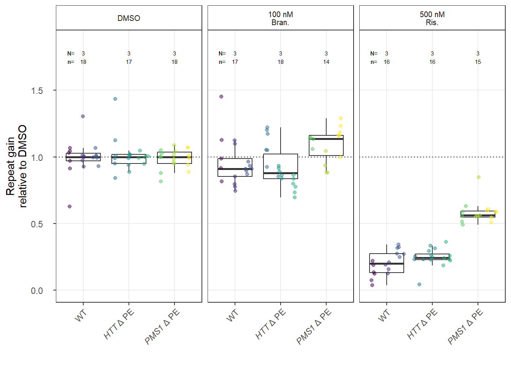
fig7d_lm <- fig7d_data %>%
lm(normalised_gain ~ cell_line + genotype * treatment, data = .)
comparisons(fig7d_lm,
variables = list(treatment = "pairwise"),
newdata = datagrid(genotype = unique(fig7d_data$genotype))
) |>
arrange(genotype)
Term Contrast Estimate Std. Error z Pr(>|z|)
treatment 100 nM Bran. - DMSO -0.04194 0.03954 -1.061 0.288831
treatment 500 nM Ris. - DMSO -0.79245 0.04025 -19.688 < 2e-16
treatment 500 nM Ris. - 100 nM Bran. -0.75052 0.04088 -18.361 < 2e-16
treatment 100 nM Bran. - DMSO -0.08520 0.03954 -2.155 0.031171
treatment 500 nM Ris. - DMSO -0.75473 0.04088 -18.464 < 2e-16
treatment 500 nM Ris. - 100 nM Bran. -0.66953 0.04025 -16.634 < 2e-16
treatment 100 nM Bran. - DMSO 0.09771 0.04177 2.339 0.019316
treatment 500 nM Ris. - DMSO -0.40864 0.04094 -9.982 < 2e-16
treatment 500 nM Ris. - 100 nM Bran. -0.50635 0.04345 -11.654 < 2e-16
2.5 % 97.5 % genotype
-0.11942 0.035554 WT
-0.87134 -0.713563 WT
-0.83063 -0.670403 WT
-0.16268 -0.007706 <i>HTT</i> Δ PE
-0.83484 -0.674611 <i>HTT</i> Δ PE
-0.74842 -0.590641 <i>HTT</i> Δ PE
0.01585 0.179571 <i>PMS1</i> Δ PE
-0.48888 -0.328406 <i>PMS1</i> Δ PE
-0.59152 -0.421192 <i>PMS1</i> Δ PE
Prediction type: response
Columns: rowid, type, term, contrast, estimate, std.error, statistic, p.value, conf.low, conf.high, predicted, predicted_hi, predicted_lo, normalised_gain, cell_line, treatment, genotype predictions(fig7d_lm,
newdata = datagrid(
treatment = unique(fig7d_data$treatment),
genotype = unique(fig7d_data$genotype)
)) |>
me_fold_calculator(fold_var_name = "treatment",
fold_var_group_denom = "DMSO",
split_var_name = "genotype",
rev = TRUE)[1] "WT"
comparison fold conf.low conf.high
1 100 nM Bran. - DMSO -1.043119 -0.9725354 -1.124750
2 500 nM Ris. - DMSO -4.569279 -3.4609499 -6.721884
[1] "<i>HTT</i> Δ PE"
comparison fold conf.low conf.high
1 100 nM Bran. - DMSO -1.091679 -0.9813193 -1.230005
2 500 nM Ris. - DMSO -3.905616 -2.7701527 -6.618477
[1] "<i>PMS1</i> Δ PE"
comparison fold conf.low conf.high
1 100 nM Bran. - DMSO -0.9121463 -0.8315544 -1.010036
2 500 nM Ris. - DMSO -1.6745229 -1.4240406 -2.031930Is the PMS1 delta PE risdiplam treatment reduced as much as the WT for the same treatment?
comparisons(fig7d_lm,
variables = list(treatment = unique(fig7d_data$treatment)[c(1,3)]),
newdata = datagrid(genotype = unique(fig7d_data$genotype)[c(1,3)]),
hypothesis = "b1 = b2"
)
Term Estimate Std. Error z Pr(>|z|) 2.5 % 97.5 %
b1=b2 -0.3838 0.05741 -6.685 2.3067e-11 -0.4963 -0.2713
Prediction type: response
Columns: type, term, estimate, std.error, statistic, p.value, conf.low, conf.high fig7e_data <- read_csv("data/fig7/fig7e_data_instability2.csv") |>
mutate(genotype = gsub("PMS1","<i>PMS1</i>",genotype),
genotype = gsub("delta", "Δ", genotype),
genotype = gsub("\n", " ", genotype),
genotype = fct_relevel(genotype,
"WT"),
treatment = str_replace(treatment, "nM\n", "nM "),
treatment = fct_relevel(treatment,
"DMSO"))
fig7e_numbers <- fig7e_data |>
group_by(genotype, treatment) |>
summarise(N = length(unique(cell_line)),
n = n())
(fig7e_g <- fig7e_data |>
ggplot(aes(genotype, normalised_gain)) +
geom_hline(yintercept = 1, lty = 3) +
geom_boxplot(position = position_dodge(),
outlier.shape = NA) +
geom_text(data = fig7e_numbers,
aes(x = genotype, y = 1.75,
label = paste0(N,"\n", n)),
size = 2) +
geom_text(data = data.frame(label = rep("N=\nn="),
genotype = unique(fig7e_data$genotype)),
aes(x = 0.75, y = 1.75, label = label),
size = 2) +
ggforce::geom_sina(aes(colour = as.factor(cell_line)),
size = 2,
alpha = 0.5) +
scale_colour_viridis_d() +
scale_y_continuous(limits = c(0, 1.86),
breaks = c(0, 0.5, 1, 1.5)) +
facet_wrap(vars(treatment), nrow = 1, scales = "free_x") +
labs(x = "", y = "Repeat gain\nrelative to DMSO", colour = "Genotype clone") +
theme_bw() +
theme(strip.background =element_rect(fill="white"),
legend.position = "none",
axis.text.x = ggtext::element_markdown(angle = 45, hjust = 1, vjust =1),
axis.text.y = element_text(margin = margin(0,10,0,0)),
panel.grid.minor.y = element_blank(),
strip.text = element_text(size = 7.4)
))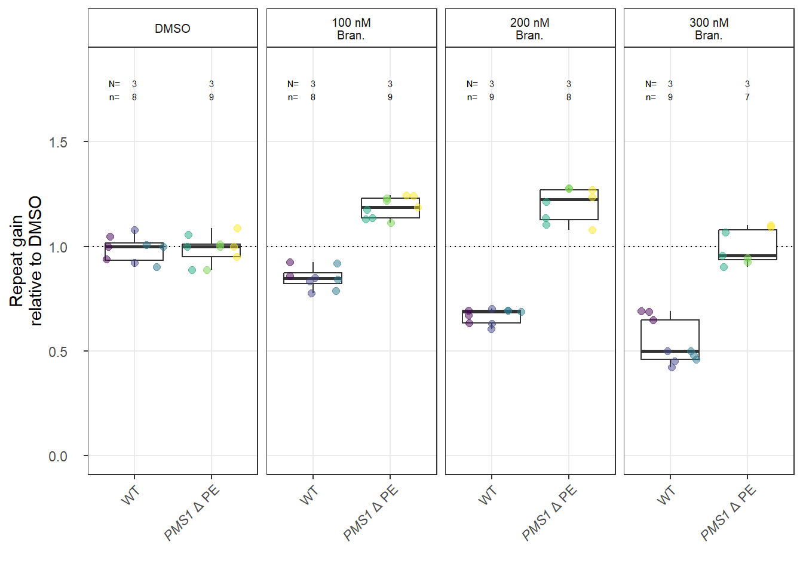
fig7e_lm <- fig7e_data |>
lm(normalised_gain ~ cell_line + genotype * treatment, data = _)
comparisons(
fig7e_lm,
variables = list(treatment = "pairwise"),
newdata = datagrid(genotype = unique(fig7e_data$genotype))
) |>
arrange(genotype)
Term Contrast Estimate Std. Error z Pr(>|z|)
treatment 100 nM Bran. - DMSO -0.12794 0.03271 -3.9111 9.1883e-05
treatment 200 nM Bran. - DMSO -0.31540 0.03167 -9.9585 < 2.22e-16
treatment 300 nM Bran. - DMSO -0.44552 0.03167 -14.0667 < 2.22e-16
treatment 200 nM Bran. - 100 nM Bran. -0.18746 0.03167 -5.9190 3.2396e-09
treatment 300 nM Bran. - 100 nM Bran. -0.31758 0.03167 -10.0272 < 2.22e-16
treatment 300 nM Bran. - 200 nM Bran. -0.13011 0.03066 -4.2431 2.2045e-05
treatment 100 nM Bran. - DMSO 0.19951 0.03066 6.5061 7.7106e-11
treatment 200 nM Bran. - DMSO 0.21150 0.03168 6.6772 2.4361e-11
treatment 300 nM Bran. - DMSO 0.01625 0.03286 0.4946 0.62091
treatment 200 nM Bran. - 100 nM Bran. 0.01199 0.03168 0.3786 0.70495
treatment 300 nM Bran. - 100 nM Bran. -0.18326 0.03286 -5.5771 2.4458e-08
treatment 300 nM Bran. - 200 nM Bran. -0.19525 0.03374 -5.7878 7.1327e-09
2.5 % 97.5 % genotype
-0.19205 -0.06382 WT
-0.37748 -0.25333 WT
-0.50759 -0.38344 WT
-0.24954 -0.12539 WT
-0.37965 -0.25550 WT
-0.19022 -0.07001 WT
0.13941 0.25961 <i>PMS1</i> Δ PE
0.14942 0.27359 <i>PMS1</i> Δ PE
-0.04815 0.08065 <i>PMS1</i> Δ PE
-0.05009 0.07408 <i>PMS1</i> Δ PE
-0.24766 -0.11886 <i>PMS1</i> Δ PE
-0.26137 -0.12913 <i>PMS1</i> Δ PE
Prediction type: response
Columns: rowid, type, term, contrast, estimate, std.error, statistic, p.value, conf.low, conf.high, predicted, predicted_hi, predicted_lo, normalised_gain, cell_line, treatment, genotype predictions(fig7e_lm,
newdata = datagrid(
treatment = unique(fig7e_data$treatment),
genotype = unique(fig7e_data$genotype)
)) |>
me_fold_calculator(fold_var_name = "treatment",
fold_var_group_denom = "DMSO",
split_var_name = "genotype",
rev = TRUE)[1] "WT"
comparison fold conf.low conf.high
1 100 nM Bran. - DMSO -1.152039 -1.083165 -1.230267
2 200 nM Bran. - DMSO -1.482255 -1.372443 -1.611169
3 300 nM Bran. - DMSO -1.850385 -1.682346 -2.055719
[1] "<i>PMS1</i> Δ PE"
comparison fold conf.low conf.high
1 100 nM Bran. - DMSO -0.8293214 -0.7759082 -0.8906323
2 200 nM Bran. - DMSO -0.8208986 -0.7676236 -0.8821200
3 300 nM Bran. - DMSO -0.9835126 -0.9065072 -1.0748153same change with 100 or 200 nM for the different genotypes?
100 nM
comparisons(
fig7e_lm,
variables = list(treatment = c("DMSO", "100 nM Bran.")),
newdata = datagrid(genotype = unique(fig7e_data$genotype)),
hypothesis = "b1 = b2"
) |>
as.data.frame() |>
knitr::kable()| type | term | estimate | std.error | statistic | p.value | conf.low | conf.high |
|---|---|---|---|---|---|---|---|
| response | b1=b2 | -0.3274483 | 0.0448373 | -7.303028 | 0 | -0.4153279 | -0.2395688 |
200 nM
comparisons(
fig7e_lm,
variables = list(treatment = c("DMSO", "200 nM Bran.")),
newdata = datagrid(genotype = unique(fig7e_data$genotype)),
hypothesis = "b1 = b2"
) |>
as.data.frame() |>
knitr::kable()| type | term | estimate | std.error | statistic | p.value | conf.low | conf.high |
|---|---|---|---|---|---|---|---|
| response | b1=b2 | -0.5269065 | 0.0447935 | -11.76301 | 0 | -0.6147001 | -0.4391128 |
fig7_top <- plot_spacer() + fig7c_g + plot_layout(widths = c(0.65,0.35))
fig7_bottom <- fig7d_g + fig7e_g + plot_layout(widths = c(0.9,1.0))
fig7_g <- fig7_top / fig7_bottom +
plot_annotation(tag_levels = list(c("c", "d", "e")))
ggsave("outputs/fig7.pdf",
device = cairo_pdf,
fig7_g,
width = 7.5,
height = 6)fig8a_data <- read_csv("data/fig8/fig8a_data_overlap.csv") |>
mutate(
across(c("denominator", "numerator"), \(x) str_replace(x, " et","\net")),
denominator = fct_rev(denominator))
(
fig8a_g <- fig8a_data |>
ggplot(aes(numerator, denominator, fill = percent, label = n_genes)) +
geom_tile() +
geom_text(colour = "white",
size = 2.5, fontface='bold') +
geom_text(data = fig8a_data |> filter(n == n_genes),
colour = "black",
size = 2.5, fontface='bold') +
facet_wrap(vars(drug)) +
scale_fill_viridis_c(na.value="white") +
labs(y = "",
x = "",
fill = "Overlap\nproportion") +
theme_minimal() +
theme(axis.text.x = element_text(angle = 90, hjust = 1, size = 6),
axis.text.y = element_text(size = 6),
)
)fig8c_data <- read_csv("data/fig8/fig8c_spliceai_data.csv") |>
filter(allele_freq > 0)
(fig8c_g <- fig8c_data |>
ggplot(aes(allele_freq, splice_ai_score)) +
geom_point(aes(colour = exon_annotation),
alpha = 0.5) +
ggrepel::geom_label_repel(data = fig8c_data |>
filter(allele_freq > 0.01 & splice_ai_score > 0),
aes(label = gene_symbol),
ylim = c(0.5,2),
force = 5,
fill = alpha(c("white"),0.5),
size = 1.5,
max.overlaps = 20,
fontface="italic") +
ggrepel::geom_label_repel(data = fig8c_data |>
filter(allele_freq > 0.01 & splice_ai_score < 0 | gene_symbol == "HTT"| allele_freq > 0.001 & splice_ai_score < 0 & gene_symbol == "ZFP82"),
aes(label = gene_symbol),
ylim = c(-0.5,-2),
force = 5,
fill = alpha(c("white"),0.5),
size = 1.5,
max.overlaps = 20,
fontface="italic") +
facet_wrap(vars(drug)) +
scale_colour_brewer(palette = "Set2") +
scale_x_log10() +
expand_limits(x = 1, y = 1) +
annotation_logticks(side = "b", outside = TRUE) +
coord_cartesian(clip = "off") +
labs(x = "MAF", y = "SpliceAI score") +
theme_minimal() +
theme(legend.position = "none",
axis.text.x = element_text(vjust=-1.5),
axis.title.x = element_text(vjust=-1.5))
)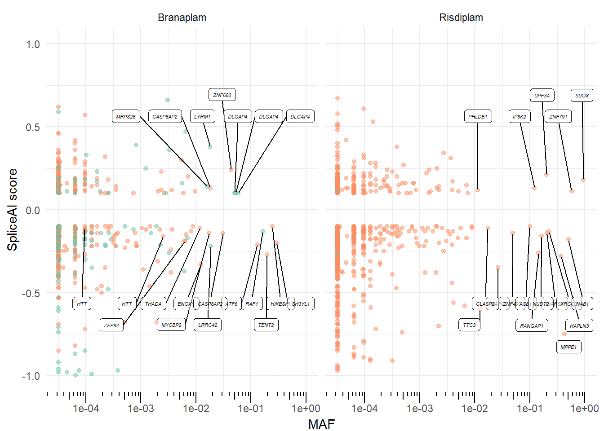
fig8d_data <- read_csv("data/fig8/fig8d_validation.csv") |>
mutate(gene = str_replace(gene, "\n", " ")) |>
mutate(gene = gsub("TENT2","<i>TENT2</i>",gene),
gene = gsub("ZFP82","<i>ZFP82</i>",gene))
fig8d_data_n <- fig8d_data |>
group_by(gene, snps, drug_treatment) |>
summarise(N = length(unique(cell_line_unique_number)),
n = n()) |>
ungroup()
(fig8d_g <- fig8d_data |>
ggplot(aes(x=as.factor(snps), y= peak_prop))+
stat_summary(fun = median, geom = "crossbar", linewidth = 0.2)+
ggforce::geom_sina(shape = 21) +
geom_text(data = fig8d_data_n,
aes(y = 1.2, label = paste0(N,"\n",n)),
position = position_dodge(width = 1),
size = 2.5) +
geom_text(data = data.frame(drug_treatment = c("50 nM", "100 nM", "100 nM"),
gene = c(unique(fig8d_data$gene)[1],
unique(fig8d_data$gene)),
label = rep("N= \nn=",3)),
aes(x = c(0.8, 0.85,0.85), y = 1.2, label = label),
size = 2.5) +
scale_y_continuous(limits = c(0,1.35)) +
facet_wrap(vars(gene,fct_rev(drug_treatment)))+
labs(y = "Canonical band\nproportion",
x = "Genotype",
colour = "Branaplam\nconc.") +
theme_bw() +
theme(strip.background =element_rect(fill="white"),
strip.text = ggtext::element_markdown())
)fig8d_data %>%
split(paste(.$gene, .$drug_treatment)) %>%
lapply(function(x) {
x |>
group_by(cell_line_unique_number, snps, drug_treatment) |>
summarise(peak_prop = mean(peak_prop)) |>
lm(peak_prop ~ snps, data = _) |>
summary()
})$`<i>TENT2</i> rs6896893 100 nM`
Call:
lm(formula = peak_prop ~ snps, data = summarise(group_by(x, cell_line_unique_number,
snps, drug_treatment), peak_prop = mean(peak_prop)))
Residuals:
1 2 3 4 5
7.845e-03 9.376e-03 -2.216e-02 4.937e-03 -1.301e-18
Coefficients:
Estimate Std. Error t value Pr(>|t|)
(Intercept) 0.33002 0.01489 22.17 0.000201 ***
snps0/1 0.34951 0.01664 21.00 0.000236 ***
---
Signif. codes: 0 '***' 0.001 '**' 0.01 '*' 0.05 '.' 0.1 ' ' 1
Residual standard error: 0.01489 on 3 degrees of freedom
Multiple R-squared: 0.9932, Adjusted R-squared: 0.991
F-statistic: 441 on 1 and 3 DF, p-value: 0.0002362
$`<i>TENT2</i> rs6896893 50 nM`
Call:
lm(formula = peak_prop ~ snps, data = summarise(group_by(x, cell_line_unique_number,
snps, drug_treatment), peak_prop = mean(peak_prop)))
Residuals:
Min 1Q Median 3Q Max
-0.050101 -0.015034 -0.001003 0.016019 0.037902
Coefficients:
Estimate Std. Error t value Pr(>|t|)
(Intercept) 0.738158 0.007719 95.63 < 2e-16 ***
snps0/1 0.169373 0.013370 12.67 1.09e-08 ***
---
Signif. codes: 0 '***' 0.001 '**' 0.01 '*' 0.05 '.' 0.1 ' ' 1
Residual standard error: 0.02441 on 13 degrees of freedom
Multiple R-squared: 0.9251, Adjusted R-squared: 0.9193
F-statistic: 160.5 on 1 and 13 DF, p-value: 1.088e-08
$`<i>ZFP82</i> rs190169579 100 nM`
Call:
lm(formula = peak_prop ~ snps, data = summarise(group_by(x, cell_line_unique_number,
snps, drug_treatment), peak_prop = mean(peak_prop)))
Residuals:
1 2 3 4 5
0.028955 0.011781 -0.036302 -0.004434 0.000000
Coefficients:
Estimate Std. Error t value Pr(>|t|)
(Intercept) 0.39635 0.01389 28.538 9.45e-05 ***
snps0/1 0.13281 0.03106 4.277 0.0235 *
---
Signif. codes: 0 '***' 0.001 '**' 0.01 '*' 0.05 '.' 0.1 ' ' 1
Residual standard error: 0.02778 on 3 degrees of freedom
Multiple R-squared: 0.8591, Adjusted R-squared: 0.8121
F-statistic: 18.29 on 1 and 3 DF, p-value: 0.02348fig8_top <- fig8a_g + plot_spacer() +
plot_layout(widths = c(2/3, 1/3))+
plot_annotation(tag_levels = list(c("a", "b")))
fig8_middle <- fig8c_g+
plot_annotation(tag_levels = list(c("c")))
fig8_bottom <- fig8d_g + plot_spacer() +
plot_layout(widths = c(2/3, 1/3))+
plot_annotation(tag_levels = list(c("d")))
ggsave("outputs/fig8_top.pdf",
fig8_top,
height = 2.5,
width = 7.5)
ggsave("outputs/fig8_middle.pdf",
fig8_middle,
height = 3,
width = 7.5)
ggsave("outputs/fig8_bottom.pdf",
fig8_bottom,
height = 2.5,
width = 7.5)sup_fig2_data <- read_csv("data/sup_fig2/sup_fig2a_data.csv") |>
mutate(treatment = fct_relevel(treatment,
c("DMSO", "100","200")))
(sup_fig2_g <- sup_fig2_data |>
ggplot(aes(treatment, peak_prop, colour = snp)) +
geom_jitter() +
stat_summary(fun = median, geom = "crossbar") +
scale_colour_brewer(palette = "Set2") +
labs(y = "Canonical\nband proportion", x = "Branaplam (nM)", colour = "variant") +
theme_minimal())ggsave("outputs/sup_fig2.png",
sup_fig2_g,
height = 2.5,
width = 3.5)sup_fig3b_data <- read_csv("data/fig3/fig3d_data_traces.csv") |>
mutate(facet_label = case_when(days == 0 ~ "Day 0",
dox == "Non-induced" ~ "Day 28\nNon-induced",
dox == "Induced" ~ "Day 28\nInduced"),
facet_label = factor(facet_label,
levels = c(unique(facet_label)[1],
unique(facet_label)[3],
unique(facet_label)[2])),
strain = fct_reorder(paste0("Cell strain #",strain), strain)
)
(sup_fig3b_g <- sup_fig3b_data |>
ggplot(aes(repeats, rel_signal, colour = dox)) +
geom_vline(aes(xintercept = modal_repeat),
lty = 3, colour = "blue",
size = 1) +
geom_line() +
facet_grid(facet_label ~ strain) +
scale_x_continuous(limits = c(NA, NA)) +
labs(x = "CAG repeat",
y = "",
fill = "Day") +
theme_minimal() +
theme(axis.text.y = element_blank(),
panel.grid.major.y = element_blank(),
panel.grid.minor.y = element_blank(),
legend.position = "none")
)sup_fig3c_data <- read_csv("data/sup_fig3/sup_fig3c_data_flow.csv")
sup_fig3c_numbers <- sup_fig3c_data |>
group_by(group) |>
summarise(
total = n(),
total_pos = length(FL46.A[which(FL46.A + 1 >=10)]),
total_neg = length(FL46.A[which(FL46.A + 1 < 10)]),
prop_pos = total_pos / total,
prop_neg = total_neg / total)
(
sup_fig3c_g <- sup_fig3c_data |>
ggplot(aes(FL46.A + 1)) +
geom_histogram(aes(y = ..density..),
bins = 1000) +
geom_density(linewidth = 1) +
geom_text(data = sup_fig3c_numbers,
aes(x = 6*10^0, y = 1.5, label = paste(round(prop_neg, digits = 2)* 100, "%")),
size = 3) +
geom_text(data = sup_fig3c_numbers,
aes(x = 17, y = 1.5, label = paste(round(prop_pos, digits = 2)* 100, "%")),
size = 3) +
facet_wrap(vars(group), ncol = 1) +
geom_vline(xintercept = 10,
lty = 3,
colour = "blue") +
scale_x_log10(label = scales::label_log()) +
labs(x = "GFP signal",
y = "") +
theme_minimal() +
theme(axis.text.y = element_blank(),
panel.grid.major.y = element_blank(),
panel.grid.minor.y = element_blank())
)sup_fig3d_data <- read_csv("data/sup_fig3/sup_fig3d_data_metics.csv")
(
sup_fig3d_g <- sup_fig3d_data |>
ggplot(aes(fct_rev(dox_status), average_repeat_gain,
colour = fct_rev(metrics_grouping))) +
geom_boxplot(outlier.shape = NA) +
ggforce::geom_sina() +
scale_color_brewer(palette = "Set1") +
theme_minimal() +
labs(x = "", y = "Average repeat gain",
colour = "Sorted population")
)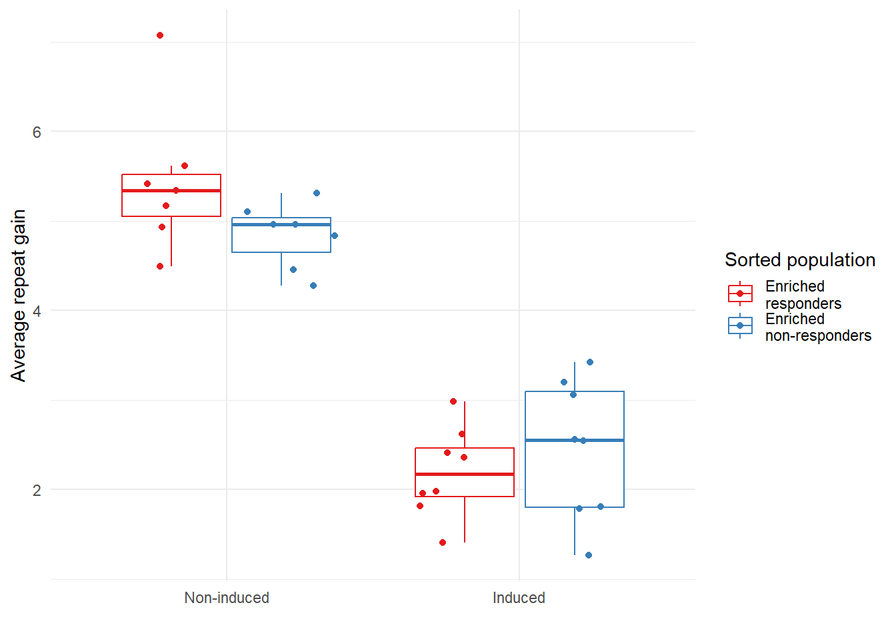
sup_fig3_top <- sup_fig3b_g +
plot_annotation(tag_levels = list(c("b")))
ggsave("outputs/sup_fig3_top.pdf",
sup_fig3_top,
width = 15,
height = 6)
sup_fig3_bottom <- sup_fig3c_g + sup_fig3d_g +
plot_layout(widths = c(2/3, 1/3)) +
plot_annotation(tag_levels = list(c("c", "d")))
ggsave("outputs/sup_fig3_bottom.pdf",
sup_fig3_bottom,
width = 7.5,
height = 3)sup_fig4_data <- read_csv("data/sup_fig4/sup_fig4_data.csv")
(sup_fig4a_g <- sup_fig4_data |>
ggplot() +
geom_col(aes(target, percent_reads, fill = fct_rev(editing_outcome))) +
geom_text(aes(x = target,
y = 1.1,
label = total_reads),
size = 3) +
facet_wrap(vars(grna), ncol = 2) +
scale_fill_brewer(palette = "Pastel2") +
labs(y = "Proportion of reads",
fill = "Editing outcome",
x = "") +
theme_minimal() +
theme(axis.text.x = element_text(face = "italic")))sup_fig4b_data <- read_csv("data/sup_fig4/sup_fig4b_data_traces.csv") |>
mutate(gene_geno = fct_relevel(gene_geno,
"+/+", "MSH3-/-", "PMS1+/-", "PMS1-/-" )) |>
group_by(gene_geno) |>
mutate(modal_repeat = max(repeats[which(day == 0 & norm_signal == max(norm_signal))]))
(sup_fig4b_g <- sup_fig4b_data |>
ggplot(aes(repeats, norm_signal, colour = gene_geno)) +
geom_line(linewidth = 0.05) +
geom_vline(aes(xintercept = modal_repeat),
lty = 3) +
facet_grid(day ~ gene_geno) +
scale_color_manual(values =
c(msh3_col,
msh3_col,
pms1_col,
pms1_col)
) +
scale_y_continuous(minor_breaks = NULL) +
scale_x_continuous(minor_breaks = NULL) +
theme_minimal() +
theme(legend.position = "none",
axis.text.y = element_blank(),
axis.text.x = element_text(size = 5),
strip.text = element_text(size = 8.4),
strip.text.x = element_text(face = "italic")) +
labs(x = "CAG repeat", y = "Relative signal intensity",
title = "Clonal edited strains"))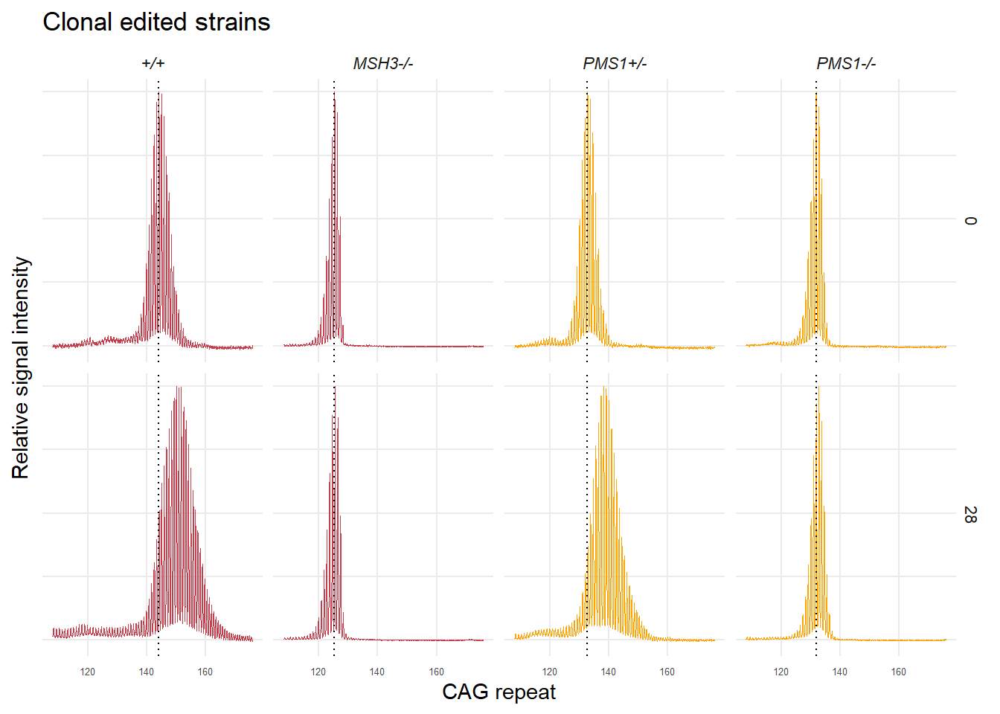
sup_fig4_g <- sup_fig4a_g / sup_fig4b_g +
plot_layout(heights = c(0.5, 1))+
plot_annotation(tag_levels = "a")
ggsave("outputs/sup_fig4.pdf",
sup_fig4_g,
width = 7.5,
height = 6)sup_fig5a_data <- read_csv("data/sup_fig5/sup_fig5a_data_cytotox_growth.csv")
sup_fig5a_labels <- sup_fig5a_data |>
filter(Elapsed == max(Elapsed)) |>
filter(drug_conc %in% c(0, 250,500))
(sup_fig5a_g <- sup_fig5a_data|>
ggplot(aes(Elapsed, mean_conf)) +
geom_ribbon(aes(ymax = upper,
ymin = lower,
fill = as.factor(drug_conc)),
alpha = 0.3)+
geom_point(aes(colour = as.factor(drug_conc))) +
geom_line(aes(colour = as.factor(drug_conc))) +
ggrepel::geom_text_repel(data = sup_fig5a_labels,
aes(label = as.factor(drug_conc)),
nudge_x = 7.5,
nudge_y = -1) +
scale_color_viridis_d() +
scale_fill_viridis_d() +
facet_wrap(vars(exp)) +
theme_minimal() +
labs(y = "Confluency (%)",
x = "Time (hours)",
colour = "Drug\nconc.",
fill = "Drug\nconc.")
)sup_fig5b_data <- read_csv("data/sup_fig5/sup_fig5b_data_cytotox_death.csv")
sup_fig5b_labels <- sup_fig5b_data |>
filter(Elapsed == max(Elapsed)) |>
filter(drug_conc %in% c(500, 750, 1000))
(sup_fig5b_g <- sup_fig5b_data|>
ggplot(aes(Elapsed, mean_count)) +
geom_ribbon(aes(ymax = upper,
ymin = lower,
fill = as.factor(drug_conc)),
alpha = 0.3)+
geom_point(aes(colour = as.factor(drug_conc))) +
geom_line(aes(colour = as.factor(drug_conc))) +
ggrepel::geom_text_repel(data = sup_fig5b_labels,
aes(label = as.factor(drug_conc)),
nudge_x = 10,
min.segment.length = unit(0, 'lines')) +
scale_color_viridis_d() +
scale_fill_viridis_d() +
facet_wrap(vars(exp)) +
theme_minimal() +
labs(y = "Dead cell count\nper field of view",
x = "Time (hours)",
colour = "Drug\nconc.",
fill = "Drug\nconc.")
)sup_fig5 <- sup_fig5a_g / sup_fig5b_g +
plot_layout(guides = 'collect') +
plot_annotation(tag_levels = "a")
ggsave("outputs/sup_fig5.png",
sup_fig5,
height = 7.5,
width = 7.5)sup_fig11a_data <- read_csv("data/sup_fig11/sup_fig11a_data.csv") |>
mutate(genotype = gsub("HTT","<i>HTT</i>",genotype),
genotype = gsub("PMS1","<i>PMS1</i>",genotype),
genotype = gsub("delta", "Δ", genotype))
(sup_fig11a_g <- sup_fig11a_data |>
mutate(treatment = str_replace(treatment, "nM\n", "nM "),
treatment = fct_relevel(treatment,
"DMSO"),
genotype = fct_relevel(genotype,
"WT")) |>
ggplot(aes(treatment, (weighted_repeat_gain / 32) * 7,
colour = as.factor(cell_line))) +
geom_boxplot(outlier.shape = NA) +
ggforce::geom_sina(size = 2,
alpha = 0.5) +
scale_colour_viridis_d() +
facet_wrap(vars(genotype), nrow = 1) +
labs(x = "", y = "Average repeat gain\nper week") +
theme_bw() +
theme(
strip.background = element_rect(fill = "white"),
legend.position = "none",
axis.text.x = element_text(angle = 45, hjust = 1, vjust = 1),
axis.text.y = element_text(margin = margin(0, 10, 0, 0)),
strip.text = ggtext::element_markdown()
))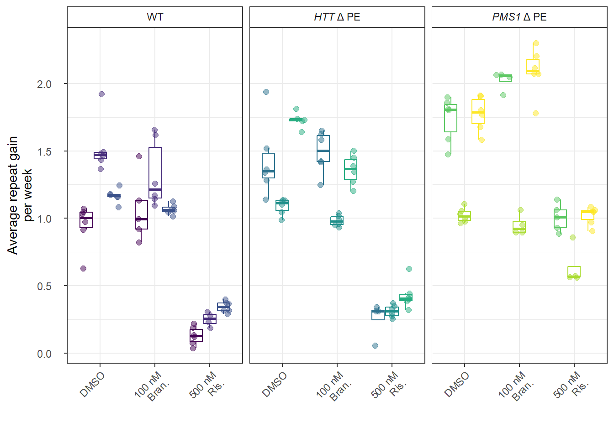
sup_fig11b_data <- read_csv("data/sup_fig11/sup_fig11b_data.csv")
(sup_fig11b_g <- sup_fig11b_data |>
mutate(treatment = str_replace(treatment, "nM\n", "nM "),
treatment = fct_relevel(treatment,
"DMSO"),
genotype = fct_relevel(genotype,
"WT"),
genotype = gsub("delta", "Δ", genotype)) |>
ggplot(aes(treatment, (weighted_repeat_gain /29) * 7, colour = as.factor(cell_line))) +
geom_boxplot(position = position_dodge(),
outlier.shape = NA) +
ggforce::geom_sina(size = 2, alpha = 0.5) +
scale_colour_viridis_d() +
facet_wrap(vars(fct_rev(genotype)), nrow = 1, scales = "free_x") +
labs(x = "", y = "Average repeat gain\nper week", colour = "Genotype clone") +
theme_bw() +
theme(
strip.background = element_rect(fill = "white"),
legend.position = "none",
axis.text.x = element_text(
angle = 45,
hjust = 1,
vjust = 1
),
axis.text.y = element_text(margin = margin(0, 10, 0, 0)),
strip.text = ggtext::element_markdown()
)
)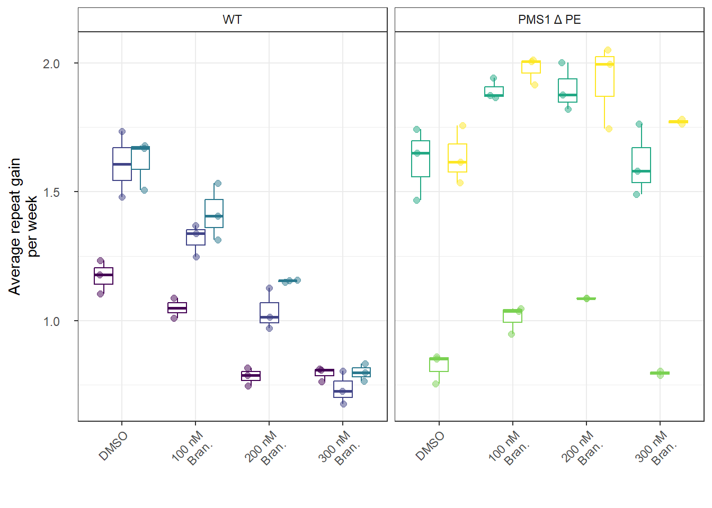
sup_fig11 <- sup_fig11a_g / sup_fig11b_g +
plot_annotation(tag_levels = list(c("a", "b")))
ggsave("outputs/sup_fig11.svg",
sup_fig11,
height = 5,
width = 7.5)sup_fig12_data <- read_csv("data/sup_fig12/sup_fig12_data.csv") |>
mutate(concentration = as.numeric(concentration))
(sup_fig12_g <- sup_fig12_data |>
ggplot(aes(concentration, proportion2)) +
geom_point(shape = 21) +
geom_smooth() +
scale_x_log10()+
facet_wrap(vars(gene), ncol = 2) +
annotation_logticks(sides = "b") +
labs(y = "Canonical band proportion", x = "Log10 branaplam (nM)") +
theme_bw() +
theme(panel.grid.major.x = element_line(),
panel.grid.major.y = element_line(),
strip.background =element_rect(fill="white"),
strip.text = element_text(face = "italic")))
ggsave("outputs/sup_fig12.svg",
sup_fig12_g,
width = 7.5,
height = 3.5)